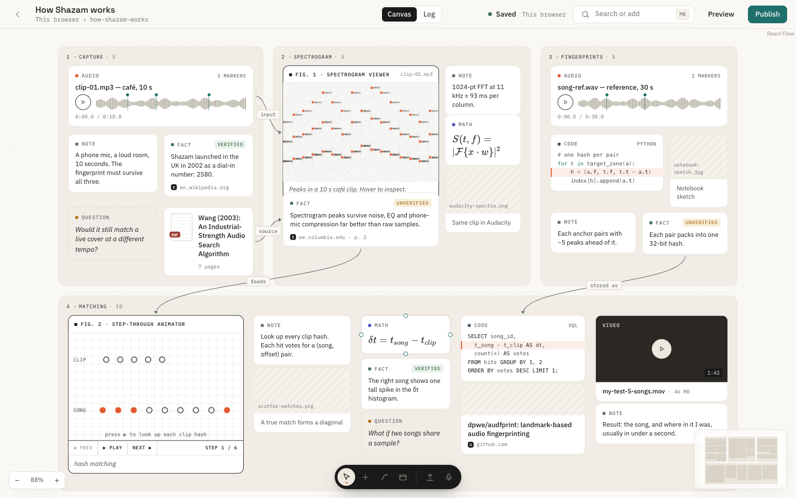
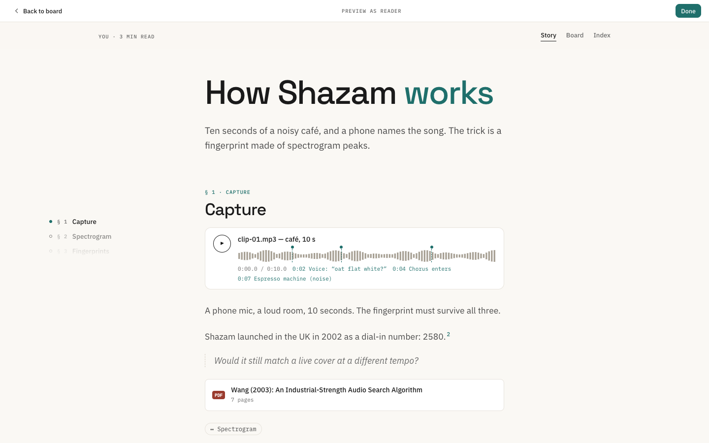
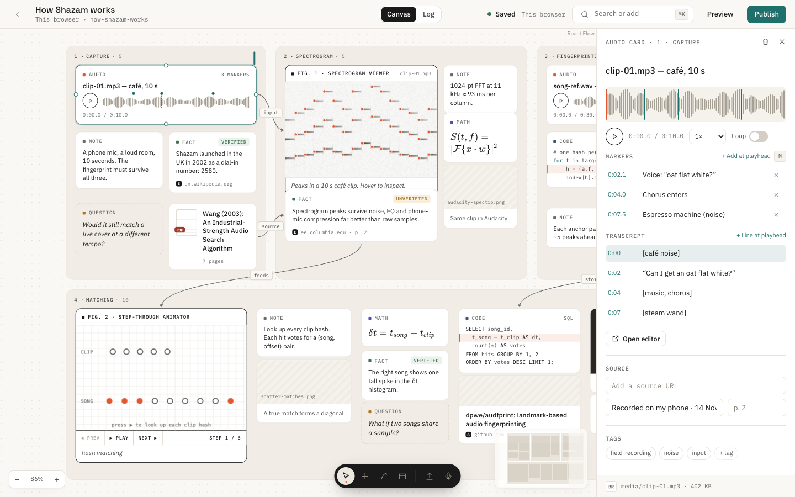
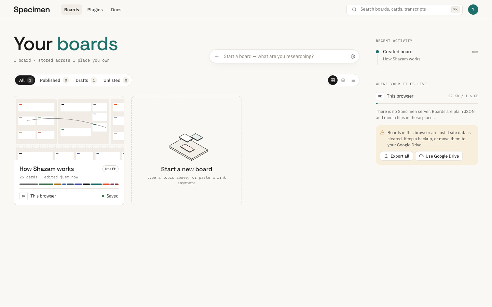

Specimen is a research board for one topic at a time. Paste notes, links, papers, audio and code onto a canvas, connect what relates, and publish a calm, illustrated page that anyone can read and play with.

The canvas: sections, cards of every kind, links between them, and live figures.
Text becomes a note, a link becomes a source card, a file becomes audio, video, an image or a PDF. Record audio in the board and add markers and a transcript.
Group cards into sections, draw labelled links between them, mark facts as verified, and add figures that readers can step through.
The same board reads as a story, a board and an index. Share a public link, or download a static site to put on any host.

What readers see: private cards and the research log stay out.
Every board is an open folder: board.json and a media/ folder. Pick where the folders live.
Start in one click. Boards are saved in this browser's storage (IndexedDB).
Boards are saved in My Drive/Specimen and open on every device.
drive.file).MIT licensed. Twelve built-in card types; every interactive figure is a plugin of plain HTML, JS and CSS that runs in a sandbox with no network.

